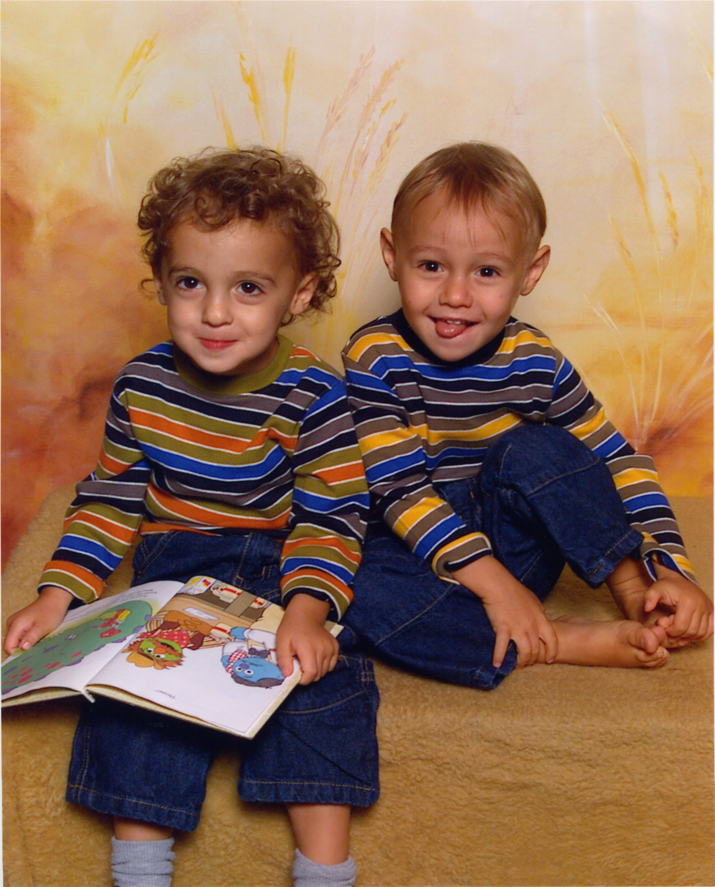

Our story
Rooted in the
Berkshires.
Ryan and Evan Silverstein were born at the exact same time and grew up together in Lenox, Massachusetts. When they were twelve, they got their first job as dishwashers at the now closed Kitchen on the Commons. It was there that they learned how a small business in the Berkshires functions and where they decided that they would one day go into business together for themselves.
From there, Ryan and Evan found work at a handful of local businesses over the years. They have been waiters, construction workers, dog walkers, gardeners, theatre-actors, babysitters, caterers, produce managers, cattle feedsmen, and sous chefs all here in the Berkshires.
And with community-building as its central ethos, they have now created The Berkshires Spotlight, a monthly postcard highlighting the best of local business in their home county.
Explore ad options